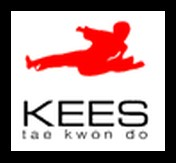
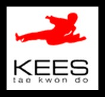

Home
Interests
- Biomedical Engineering
- Theoretical Physics
- Programming
- Taekwondo
- Climbing
- Running
- History
- Design
- Skiing
- Hiking
Accomplishments
- 90 percent average in 1st year biomedical engineering at the University of Waterloo.
- Led the development of a bicycle stabilization device to decrease the learning curve of bicycle riding.
- Used human factors research to redesign an infusion pump and story-boarded an android application.
- Valedictorian of Vernon Secondary School through classmate votes and staff approval.
- Designed and developed a 3-D cube puzzle to challenge and captivate all audeiences.
- BC provincial champion in Taekwondo sparring and poomse, and bronze medalist at the 2015 US World Open.
Work Experience
- Biomedical Engineering Research Assistant: Currently learning the laboratory procedures to maintain a healthy epithelial corneal cell line which are to be used to determine if IR induces wound healing.
- Vegetable Packaging Manager: Managed people and resources to ensure quality vegetables and exceptional service while fulfilling the tasks of a regular employee.
- Taekwondo Instructor: As an instructor I was responsible for the personal progress of people of all ages and backgrounds on a physical and mental level, by catering lesson plans, and providing encouragement and advice.


 
